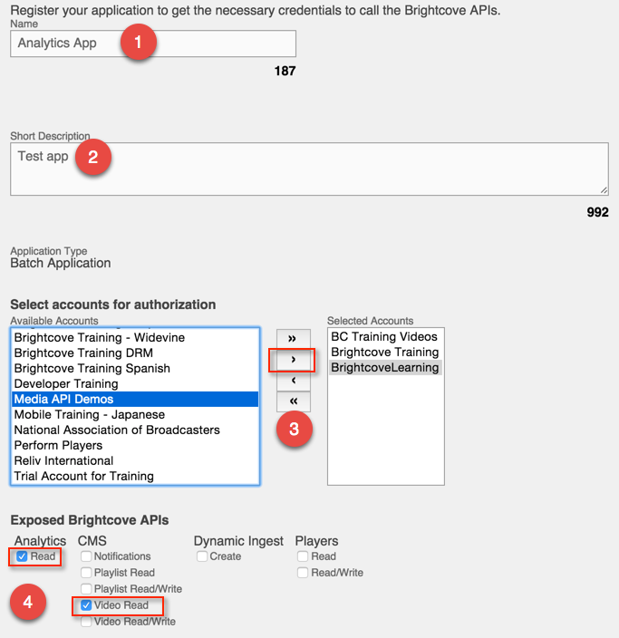

Analytics API Quick Start
This topic provides a quick start tutorial for the Analytics API. It will guide you through steps to getting authetication credentials for the API and then making an API call using CURL.
Note: access to the Analytics API is currently limited and available only for Professional or Enterprise accounts. If you are interested in getting access to the Analytics API, please contact your Account Manager.
Note: The steps in the document involve curl and other command-line tools that are native to Mac and Linux systems, but not part of the Windows operating system. If you are on Windows, you can get these tools by installing cygwin. During the install you will be prompted for packages to install. Open the Net package, then check the curl option and then finish the installation. Once you have done this you will be able to follow the Quick Start to Player Management successfully as written using the cygwin command line. Tools are available to run curl at the normal Windows command line, but not detailed in this document.
Steps
Get client credentials
Although you can get client credentials (a client_id and client_secret) directly from the Brightcove OAuth Service using CURL or Postman, the easiest way is to use the OAuth Credentials UI. We will use that method here.
- Login to Video Cloud Studio.
- Click the gear icon
 in the header.
in the header. - Click the Account Settings link:

- Click the OAuth Credentials link:

- The API Authentication page will open displaying your current client registrations.

Note: Only the client registrations for the account you are logged into will display.
- Click Register New Application.
- Enter a Name and Short Description for the client registration.
- Select one or more of your accounts for authorization. You can select multiple accounts and click > to add them or click >> to add all accounts. Click < to remove an account or << to remove all accounts.
- Select the API(s) and permission(s) to enable for this registration.
 - Click Save.
- A Client ID and Client secret will be returned.

Note: Copy the client secret and store it in a secure location as the client secret will not be displayed again.
Get an access token
Now that we have client credentials, we're ready to get an access token. We will do this using CURL. Because we will need to do this repeatedly if we are going to make multiple calls to API over more than a five minute period, we will export the client_id and client_secret as system variables to make it easier to rerun the CURL request.
-
At a command line, export the client id and secret you obtained in the previous steps as
CLIENT_IDandCLIENT_SECRET:$ export CLIENT_ID={your client id} $ export CLIENT_SECRET={your client secret} -
Send the following CURL request to the OAuth Service (note that we are using the client id and secret as a username/password pair):
$ curl -s --data "grant_type=client_credentials" https://oauth.brightcove.com/v3/access_token --header "Content-Type: application/x-www-form-urlencoded" --user $CLIENT_ID:$CLIENT_SECRET -
You should see a JSON response that includes the
access_token:{"access_token":"APA-eethQBfNsqKrK6jpR9zuqFc3GqCuJkBmJlV15MPCO9yv_4V1GD_dHnBf5SuMi_BPgDRDjsp0VnZlOb_RBlw55FnI7NSPkPxeNdvgmz2vhGjX08EB-9xsfkEgqNQmCbtIaZcrvFjfj5hvdac5PRw05CqxBX2tqmfyZ9yJnQiUdAyK-I6814LYDdLYhYggq38eWsUNLhwSep4Yjiw0wCbWJr3yci6dWuGDixsGHvp9IKYCRDbELDNuiVzfzq6pd3yux5ZvovuJJILrPiatQW2HOOOtIqCh629Sf-_c64QNSFgKGIy2Aeuv9F1qCYmgbTsz7WafRCiwmHosjPsIHTjKnud7zxKJCyTnoIDdK9Fvo4_qUwkWU17sBWz-D_9cgJsFGMP3BRl1-5begFnSZhfStJcjnwDG4RchJ4X377uuabEd-uP98qYqyKsBAH8FK7FJ1pGOFRV2","token_type":"Bearer","expires_in":300} - Copy the value for the
access_token(not including the quotation marks). -
Export the
access_tokenas ACCESS_TOKEN:$ export ACCESS_TOKEN={your access token} - Whenever the access token expires, you need to repeat steps 13-16 to get a new one.
Make the Analytics API call
Now we are ready to make the API request.
-
Run the following CURL command to make the API request, substituting your Video Cloud account id for
{account_id}:curl -s \ "https://data.brightcove.com/analytics-api/videocloud/accounts/{account_id}/report/?dimensions=video,referrer_domain&limit=2&offset=0&fields=all&sort=engagement_score&format=json" \ -H "Authorization: Bearer $ACCESS_TOKEN" -
The response should look like this (the response here has been prettified for readability):
>{"account":"20318290001","item_count":2251,"items":[{"engagement_score":200,"play_rate":0.5,"referrer_domain":"plstudios.com","video":"1854105390001","video_duration":"218.0","video_impression":2,"video_name":"Adding Captions to Videos","video_percent_viewed":200,"video_seconds_viewed":436,"video_view":1},{"engagement_score":200,"play_rate":0.17,"referrer_domain":"ratchetlocal.com","video":"594316519001","video_duration":"28.0","video_impression":6,"video_name":"Sea_LionFish","video_percent_viewed":200,"video_seconds_viewed":56,"video_view":1}],"summary":{"engagement_score":55.09,"video_seconds_viewed":789819,"video_percent_viewed":362308.4,"video_impression":105084,"video_view":6577,"play_rate":0.06}} - If you got an unauthorized request response instead, try repeating steps 13-16 to get a new access token, and make sure that account id that you used in the request matches one that got client credentials for in steps 1-12.